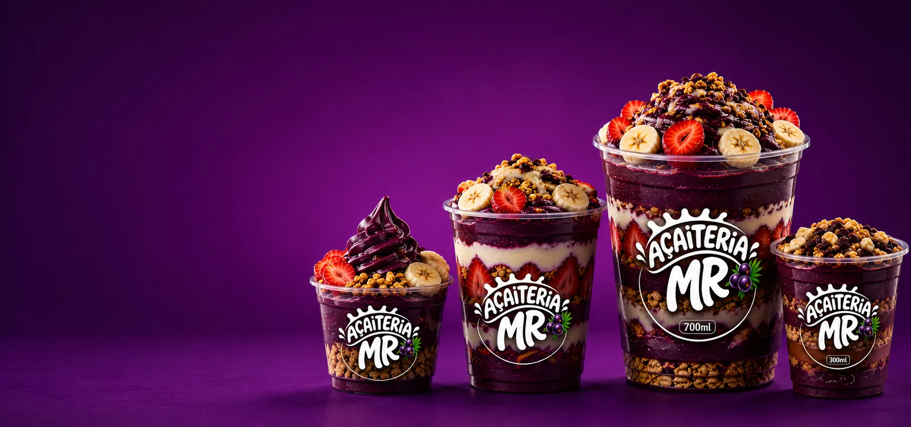

Inauguração
O açaí que Viana
tava esperando
Cremoso, batido na hora e montado do seu jeito. A gente leva até a sua porta.
Abre dia 5 de setembro
Cremoso, batido na hora e montado do seu jeito. A gente leva até a sua porta.
Abre dia 5 de setembro

Abre o site e monta o seu copoacaiteria-mr.netlify.app
Escolhe base, sabor e complementostrês entram de graça
Confirma e recebe em casataxa de entrega: R$ 3 em Viana, R$ 6 em Cariacica
Promoção, sabor novo e o combinado do fim de semana saem primeiro por aqui.